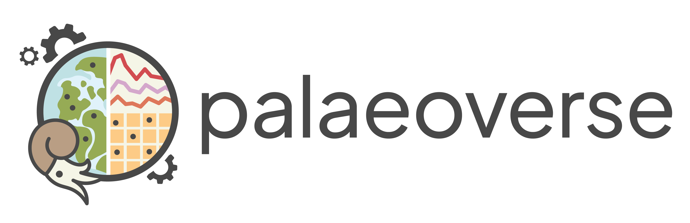

Resources
Summary
This unit of the workshop introduces a variety of resources that are of relevance to palaeobiological analyses and palaeontologists more broadly. The slides for the unit are available here and provide an overview to these commonly used resources, along with links to relevant websites and other content. This acts as both a summary of the resources mentioned in the other Units, as well as including additional resources which may be of interest.
This session is led by Christopher Dean and Erin Dillon. If you encounter any issues while working with these resources, please contact either Chris or Erin. Additionally, our aim is to expand upon this content to make it a more widely available resource; if you have any resources that you use that you think might be helpful to others, please add them to the growing Palaeoverse resources database here.
Resources
Workshop Slides
Data Acquisition
These resources cover the acquisition of data for palaeontological analyses, including occurrence datasets as well as covariate and other associated data.
Occurrence Databases
Paleobiology Database: A public database of paleontological occurrence data gathered from the published record, maintained by an international non-governmental group of paleontologists.
Geobiodiversity database: An integrated system for the management and analysis of stratigraphic and paleontological information, mostly covering China.
Neotoma: A database of fossil occurrences and other associated data primarily covering the Pliocene-Quaternary.
GBIF: An international network and data infrastructure funded by the world’s governments and aimed at providing open access to data about a variety of life on Earth.
iDigBio: Data and images for millions of biological specimens, curated, connected and made available in electronic format for the biological research community.
Neptune: A relational database of microfossil occurrence records from DSDP and ODP publications.
BioDeepTime: A database of biodiversity time series for modern and fossil assemblages.
Phylacine: The Phylogenetic Atlas of Mammal Macroecology which provides phylogenies, range maps, trait data, and threat status for all 5,831 known mammal species that lived since the last interglacial (~130,000 years ago until present).
PARED: Data for Phanerozoic reefs in a standardised format, with geological, geographic and paleontological information for each reef.
3D Databases
DigiMorph: A dynamic archive of information on digital morphology and high-resolution X-ray computed tomography of biological specimens.
Morphobank: Provides data related to phenotypes as well as peer reviewed morphological matrices.
Phenome10k: Provides 3D scans, both CT and surface, of biological and palaeontological specimens.
Morphosource: A 3D data repository for physical object important to natural histyory, cultural heritage and scientific collections.
Digital Atlas of Ancient Life: Contains online fieldguides to fossils from particular times and regions, but also a virtual collection of 3D photogrammetry models of fossil and modern specimens from museum collections.
Trait Databases
Open Traits Network: A global community of researchers/institutions, which provide links to a variety of open source trait databases.
Coral Trait Database: A compilation of scleractinian coral life history trait, phylogenetic and biogeographic data.
Covariate Datasets
Macrostrat: A platform for the aggregation and distribution of geological data relevant to the spatial and temporal distribution of sedimentary, igneous, and metamorphic rocks as well as data extracted from them.
USGS Geological Maps of North America: Digital geologic maps of the US states with consistent lithology, age, GIS database structure, and format.
Mindat: The world’s largest open database of minerals, rocks, meteorites and the localities they come from.
WorldClim: Maps, graphs, tables, and data of the global climate.
ESA WorldCover: A freely accessible global land cover product at 10 m resolution for 2020 based on both Sentinel-1 and Sentinel-2 dat.
Digital Elevation Maps: Global 1-km digital elevation raster data derived from a variety of sources.
Global Maximum Green Vegetation Fraction: A MODIS-Based Global 1-km Maximum Green Vegetation Fraction dataset.
Deep Time Maps: Global and regional paleogeographic maps for different times in Earth history.
Paleomap Project: Global paleogeographic maps for different times in Earth history.
Additional Lists of Databases
Examples of databases and online data portals used in paleo research (Table 1): Examples of databases and online data portals used for paleobiological and (paleo)ecological research, along with their primary temporal, spatial, and taxonomic scope.
PAGES working group databases: Databases and metadatabases compiled by PAGES Working Groups.
Data Preparation
These resources cover the preparation of data for palaeontological analyses, including data cleaning, organisation and transformation.
General Resources
Data cleaning: A quick intro to data cleaning in data science.
Tidy data: A 1-hour lecture on setting up data for reproducible research.
Examples of Packages for Data Cleaning and Preparation
Palaeoverse: A community driven R package to support paleobiological data preparation and analysis.
janitor: A package to clean and reformat columns names and explore duplicate records.
Data.validator: A package to make reports on where data doesn’t fit a set of predetermined criteria.
CoordinateCleaner: Automated flagging of common spatial and temporal errors in biological and paleontological collection data.
Fossilbrush: Automated detection and resolution of anomalies in paleontological occurrence datasets.
Also check out this list of generally useful R packages here (Table 2)
Data Visualisation
These resources cover the various ways in which data can be visualised, from theoretical, practical and ethical angles.
General Resources
Best Practices for Data Visualisation (Royal Society Guide):
R Graph Gallery: A collection of charts made with the R programming language, and guides on making these plots.
Plotly: A library for making publication-quality graphs in R.
COBLIS (Colour Blindness Simulator): A service to test what images look like to those with colourblindness.
Colorhunt: Color palettes for designers and artists.
Inkscape (vector graphics): A free and open-source vector graphics editor.
GIMP (raster graphics): A free and open-source raster graphics editor used for image manipulation and image editing.
Examples of Packages for Data Visualisation
General Palaeontology Resources
Palaeoverse: An initiative which aims to bring the palaeobiology community together to share resources, reach agreed standards, and improve reproducibility in palaeobiological research.
Palaeoverse Google Group: A Google group where users can ask questions about the functionality of the palaeoverse R package, post job listings, discuss papers and more.
Palaeoverse Resources Database: A Google sheet of various resources related to paleobiology. Feel free to add your own suggestions!
Paleonet: A system of listservers, WWW pages, and ftp sites designed to enhance electronic communication among palaeontologists.
Associations and Networks
Paleontological Society: A US based society for advancing knowledge and understanding of paleontology and life’s evolution through research, education, and advocacy.
Palaeontological Association: A UK based registered charity to promote the study of palaeontology through academic journals, fieldtrips/guides, newsletters, grants and awards.
PAGES (Past Global Changes) Network: An international effort to coordinate and promote past global change research.
Conservation Paleobiology Network: A network aiming to transform conservation paleobiology into an applied science that informs conservation and restoration efforts.
Earth Science Women’s Network: A grassroots, member-driven organization, dedicated to moving the geosciences forward.
PaleoSynthesis Project: A project aiming to strengthen paleontology through building a long-term research vision for scientific cooperation.
Workshops and Courses
Analytical Paleobiology Workshop: A three week workshop run once a year to introduce graduate students to a range of analytical methods that are foundational to or at the cutting edge of paleobiological research.
Physalia Courses: Provide scientific training courses and Workshops in Bioinformatics, Genomics, and related fields.
PaleoCAMP: A summer school for graduate student providing paleoclimate training in climate archives, models, and proxies.
Transmitting Science Workshops: Organise courses and peer-to-peer events that support the exchange of scientific skills, methods, and advances in the fields of life and earth sciences.
General Programming Resources
CRAN Taskviews: Provide guidance which packages on CRAN are relevant for tasks related to a certain topic. A paleontology specific taskview is currently being put together by the Palaeoverse team.
Posit Cheatsheets: Cheatsheets for popular R packages.
Free R Books
Hands-On Programming with R: An overview of R as a programming language, to guide complete beginners
An Introduction to R: A broad introduction to the R environment
R for Data Science: General overview of how to carry out data analysis using R
R Packages: A complete guide to making R packages.
Cookbook for R: A quick start guide for solving specific issues in R.
